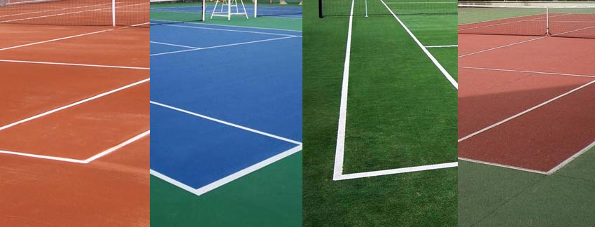

La superficie de las pistas de tenis es una de las variables más importantes de este deporte, pues altera las condiciones y el desarrollo de los partidos en muchísimos factores. De hecho, hasta a los tenistas profesionales les cuesta adaptar y modificar su juego dependiendo de la superficie en la que vayan a jugar. Es fundamental que todo jugador que esté dando sus primeros pasos en este deporte tenga muy claro como la superficie puede cambiar su juego y cómo aprovechar cada una de las caracteristícas para explotar sus virtudes y destapar los puntos débiles del rival.
Existen un total de tres superficies sobre las que se puede disputar un partido de la ATP o WTA: Cancha dura o cemento, tierra batida e hierba. Por supuesto, cada una de ellas tiene sus caracteristícas e incluso son más populares en ciertas regiones del mundo por sobre las demás, así que te lo contaremos todo una por una.
Son las pistas de tenis más populares para aficionados, pues son las más fáciles de construir y mantener y las que tienen un material más duradero. Sobre esta superficie se uuegan dos Grand Slams año a año: El Abierto de Australia y el US Open. Es una pista que da pie a un juego mucho más rápido y ofensivo, por lo que podría ser más atractiva desde el punto de vista dek espectáculo.
El dueño indiscutible de la cancha de cemento es Roger Federer, máximo ganador sobre esta superficie con más de 780 victorias. La cancha dura le permitía a Federer aprovechar la precisión de su golpe de derecha, la potencia de su revés y la letalidad de sus voleas.
Es una superficie difícil de encontrar fuera del ámbito profesional, aunque es muy preferidad en España; y como muestra tenemos el icónico Masters de Madrid. El torneo más popular del mundo sobre tierra batida es el Roland Garros, que se disputa en París, Francia. Sin embargo, no es un tipo de superficie que sea accesible para todo el mundo con facilidad, pues su mantenimiento es costoso.
Los números de Rafael Nadal hablan por sí solos y lo hacen ser el único rey de la tierra batida con sus 14 títulos de Roland Garros en su palmarés. Ver a Nadal sobre la tierra batida es arte, su forma de deslizarse y la energía que pone en cada punto son reflejo de su intensidad al jugar, no dar ningún punto por perdido y aprovechar el mínimo error del rival.
Posiblemente la superficie más complicada de encontrar en todo el mundo por todos los cuidados que esta debe tener para estar en óptimas condiciones. Teniendo como principal exponente al Wimbledon, las pistas de tenis de hierba también dan pie a un juego muy rápido, auqnue con botes algo irregulares dependiendo del estado de la pista. Las pistas de tenis de hierba suelen encontrarse con mayor frecuencia en el Reino Unido, ya que también afecta el factor climático para su mantemimiento. Además, el roce de la suela de los zapatos también desgasta la pista, modificando el bote y la adhrencia de las zapatillas en la superficie.
Y volvemos nuevamente con Roger Federer, el máximo ganador de torneos Wimbledon de tods la historia del tenis con 8 en total. Otra estrella de la hierba es quien sigue a Federer en el Ranking, junto a Pete Sampras, hablamos de Novak Djokovic.
Estas pistas son de cubierta sintética y no requieren de un extremo cuidado, por lo que son preferisas para todas las condiciones. Seguramente ya has jugado un partidillo entre colegas en una de estas.
